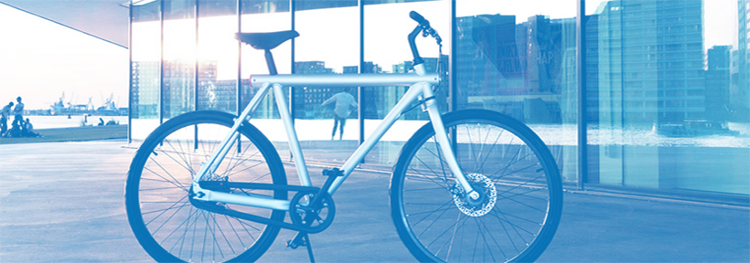

Nairobi Dev School is an intensive 12 week traning program in Nairobi, Kenya. We focus on Web Development using Ruby on Rails.
A few months ago, Chumo was accepted into the summer intake of Hacker School, a U.S.-based "retreat for hackers," where budding programmers come together for three months to write code, learn new
languages and share industry insights.
Whereas the programming boot camp was free to attend, Chumo still needed to find a way to cover her trip costs and buy a new laptop. Excited and determined, the young developer turned to online crowdsourcing platform Indiegogo for funds. She set a target of $4,200 and managed to raise nearly $5,800. All she needed then was a visa to travel to the United States.

Alas, this was not to be. As an unmarried adult who was not enrolled at university, Chumo was not eligible for a U.S. tourist visa because she couldn't show sufficient "social ties" to Kenya to prove that she was planning to return home after attending Hacker School. But the U.S. consulate's refusal only served to slightly alter the plans of this passionate coder. I thought if I can't go to the hacker school, let me try to bring the school to me. Martha Chumo "I thought if I can't go to the hacker school, let me try to bring the school to me," says Chumo. "(Let me see) what can I do to start a school here."
Within minutes of her second visa request denial, on June 4, Chumo was calling her friends to announce that, "I'm starting a hacker school in Kenya!' A few days later, she launched another Indiegogo campaign asking people to help her set up her own school for developers in Nairobi.
"I was so frustrated because I had applied to go to Hacker School; I got into it, I raised funds to go there, I had all these plans to read and learn for three months and then I'm not allowed to go -- that's how the idea for the school was born."